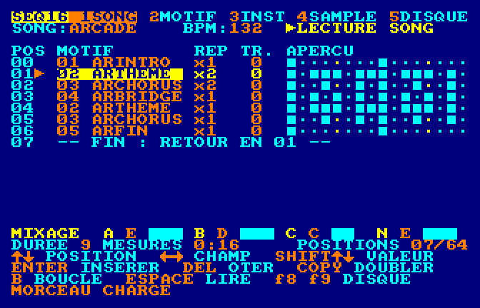
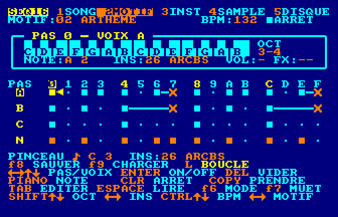
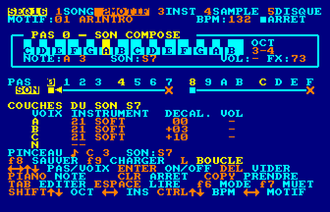
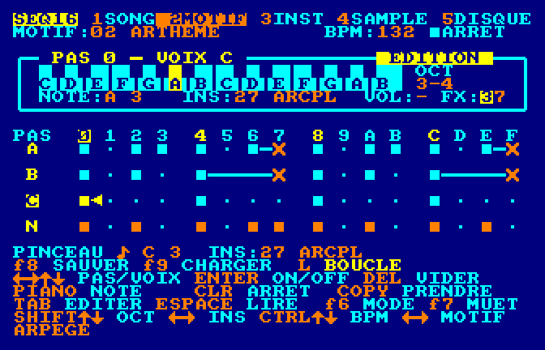
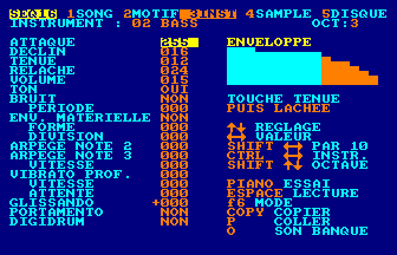
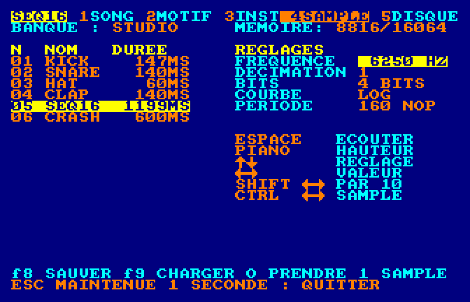
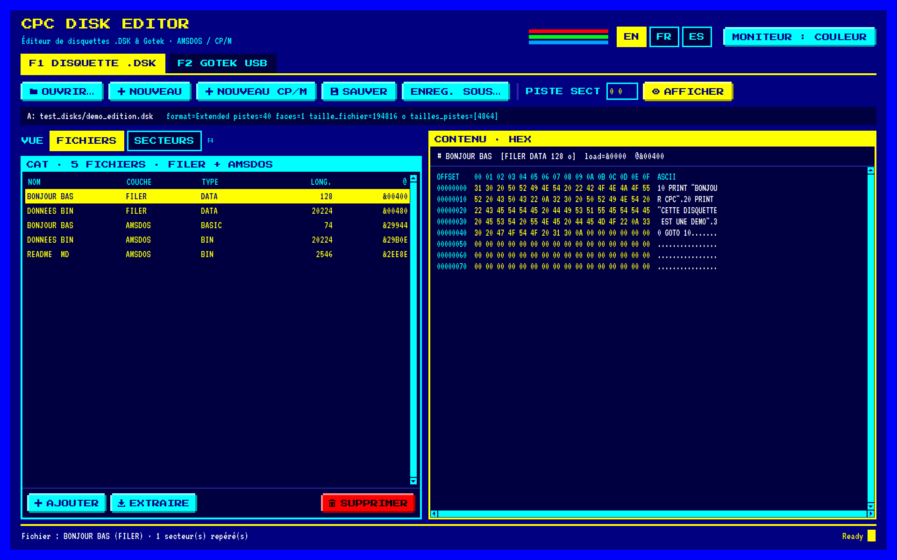
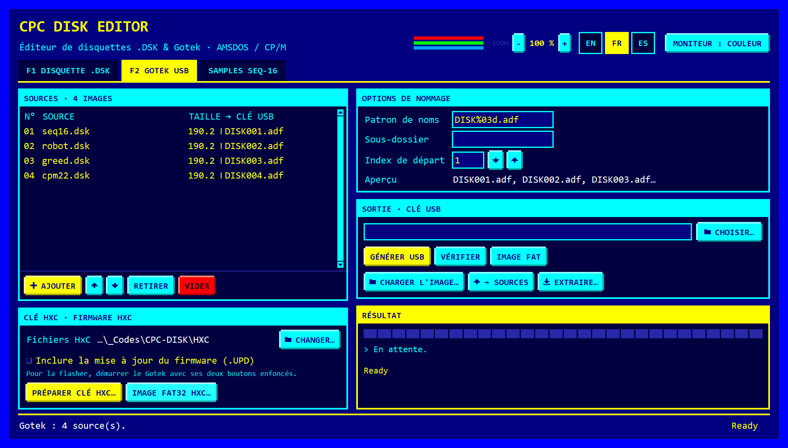
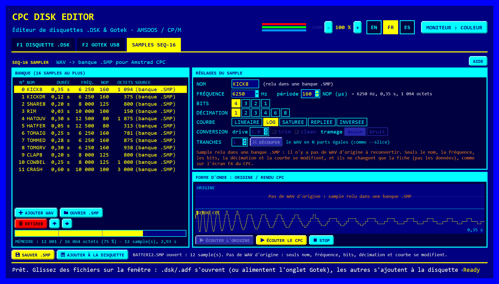

SÉQUENCEUR CHIPTUNE · AMSTRAD CPC 6128
SEQ-16
Un séquenceur chiptune 4 voix (3 tons + bruit) pour Amstrad CPC 6128, écrit en assembleur Z80.
32 motifs de 16 pas enchaînés en morceau (64 positions, répétitions, transposition, boucle), 32 instruments, 8 sons composés, 7 effets par pas. Et un sampler qui joue de vrais sons enregistrés sur la puce sonore du CPC, avec un grain réglable en direct : la dégradation du son est recherchée.
Puis, sur le CPC (réglé en 6128 dans un émulateur) :
Ready
RUN"SEQ16

Vidéo
Un tour de deux minutes, filmé dans le CPC simulé avec le vrai programme : le séquenceur, les instruments, le sampler, les motifs d'usine, les digidrums, les sons composés… et le CPC qui parle. Le son est refait à partir de chaque écriture du programme dans l'AY-3-8912.
Fonctions
Morceaux
Le panneau SONG enchaîne les motifs : 64 positions, répétitions, transposition, boucle, mixage des voix.
Motifs
32 motifs de 16 pas sur 4 voix (A, B, C et bruit N) : note, instrument, volume et effet à chaque pas.
7 effets par pas
Monte, descend, arpège, répète, coupe, retard, vibrato : notés en hexadécimal comme dans les trackers.
Instruments
32 instruments : enveloppe dessinée en direct, bruit, enveloppe matérielle, arpège, vibrato, glissando, portamento.
Sons composés
Une seule note joue jusqu'à 4 instruments à la fois ; les 8 sons composés s'éditent voix par voix.
Sampler
Le panneau SAMPLE joue des sons enregistrés (batterie, voix…) avec fréquence, décimation, bits et courbe réglables.
Digidrums
Des samples déclenchés au pas comme une note ; un morceau .SNG emporte sa banque de samples.
Banques et motifs
13 banques d'instruments (416 sons), 9 banques de samples, 125 motifs d'usine et une disquette de démonstration.
Vraie machine
Tourne sur un vrai CPC 6128 (avec un lecteur Gotek) ou dans un émulateur, en français, anglais ou espagnol.
Les cinq panneaux
Cinq panneaux, à choisir avec les touches de fonction du pavé numérique ; dans chacun, f8 sauve et f9 charge.
Les captures montrent la version française (seq16-fr.dsk), avec le morceau ARCADE de la disquette de démonstration.








Télécharger
Les disquettes du programme sont sur la page de la dernière release ; la démonstration est dans le dossier build/ du dépôt. Chaque image .dsk est une disquette CPC standard.
| Disquette | Contenu |
|---|---|
seq16-fr.dsk | SEQ-16 en français, avec les 13 banques d'instruments et les 9 banques de samples |
seq16-en.dsk | SEQ-16 en anglais (English version), mêmes banques |
seq16-es.dsk | SEQ-16 en espagnol (versión en español), mêmes banques |
seq16-demo.dsk | démonstration : SEQ-16 en français et deux morceaux, ARCADE (son composé, les 7 effets) et STUDIO (samples, voix) ; aussi -en et -es |
seq16-inst.dsk | banques seules : les 13 banques d'instruments .INS (sans le programme) |
seq16-samples.dsk | banques seules : les 9 banques de samples .SMP (sans le programme) |
seq16-motifs-mono.dsk | 62 motifs d'usine mono (son composé) — panneau MOTIF, f9 |
seq16-motifs-poly.dsk | 63 motifs d'usine poly (voix séparées) — panneau MOTIF, f9 |
Même programme, mêmes fichiers, mêmes touches dans les trois langues : seuls les textes de l'écran changent. Avec une disquette de banques ou de motifs, change de disquette, puis f9 dans le panneau correspondant (ou le panneau f5 DISQUE).
Dans un émulateur
- Télécharge
seq16-fr.dsk. - Insère la disquette dans un émulateur (WinAPE, Caprice32, ACE-DL, RetroVirtualMachine…) réglé en CPC 6128.
- Tape
RUN"SEQ16puis RETURN.
Pour quitter, maintiens ESC une seconde. Un simple appui ne suffit pas, pour ne pas perdre son travail par erreur.
Sur un vrai CPC avec un Gotek
Copie seq16-fr.dsk sur la clé USB d'un lecteur Gotek (firmware FlashFloppy ou HxC), puis tape RUN"SEQ16 sur le CPC. L'outil compagnon CPC DISK prépare la clé USB du Gotek.
Sur PC : CPC DISK
CPC DISK est l'outil compagnon : un éditeur d'images .dsk à l'allure d'écran CPC, en Python pur, sans dépendance. Il sert à :
- ouvrir
seq16-fr.dsket parcourir son catalogue AMSDOS ; - récupérer les morceaux
.SNGsauvés sur la disquette, ou en ajouter ; - préparer la clé USB du Gotek (FlashFloppy, ou une clé pour le firmware HxC) ;
- fabriquer ses propres banques de samples dans son onglet SAMPLES SEQ-16.
Téléchargement sur la page des releases de CPC DISK : un programme Windows (cpc-dsk-gui-1.2.0-windows-x64.exe) et un binaire Linux.



Ses propres banques de samples à partir de WAV
L'onglet SAMPLES SEQ-16 de CPC DISK (en français, en anglais ou en espagnol) fabrique une banque .SMP à partir de fichiers WAV, sans ligne de commande :
- À gauche, la liste des samples (16 au plus) : ajouter des WAV (Ctrl+W, plusieurs à la fois), ouvrir une banque
.SMPexistante (Ctrl+O), retirer, monter, descendre. Une jauge montre la place prise sur les 16 064 octets de la mémoire du CPC ; elle passe au rouge si la banque est trop grande. - À droite, les réglages du sample choisi : nom (6 caractères), fréquence, saturation, coupure des silences, adoucissement, tramage, bits, décimation, courbe, découpe en tranches. La forme d'onde montre l'original en haut et le rendu du CPC en bas.
- Écouter l'original ou le rendu du CPC.
- Sauver .SMP (Ctrl+S), puis Ajouter à la disquette : la disquette ouverte dans l'onglet Disquette est proposée directement.
Pour une banque .SMP ouverte, il n'y a plus de WAV d'origine : on peut changer le nom, la fréquence, les bits, la décimation et la courbe, mais pas les réglages qui demandent de reconvertir le son.
Plutôt la ligne de commande ? tools/wav2smp.py (Python 3, bibliothèque standard uniquement) convertit des WAV mono ou stéréo, 8 ou 16 bits, à n'importe quelle fréquence :
python tools\wav2smp.py mavoix.wav --trim --rate 6250 -o samples\MAVOIX.SMP --dskLe script écrit aussi un WAV d'écoute, qui permet d'entendre le résultat sur le PC avant de copier la disquette. Options et exemples dans le README.
Pour les développeurs
SEQ-16 est écrit en assembleur Z80 et assemblé avec rasm. Sous Windows :
- Place
rasm.exedanstools\. - Place le projet CPC DISK à côté de celui-ci : SEQ-16 utilise sa bibliothèque (
cpc_dsk) pour écrire sur les disquettes.tools/cpcdisk.pyle trouve tout seul (sinonpip install -e ../CPC-DISK, ou la variable d'environnementCPC_DISK). - Lance
build.bat(il faut Python 3) : il assemblesrc/main.asmet fabrique les disquettes des trois langues avec toutes les banques, les disquettes de motifs, les morceaux de test et la démonstration (build\seq16-demo.dsk).tools/snapshots.pyrefait les captures,tools/gen_site.pyce site.
_Codes/
├── CPC-SEQ-16/ ce projet
└── CPC-DISK/ l'éditeur de disquettesLes tests font tourner le vrai programme dans un simulateur Z80 :
pip install z80
python -m unittest discover -s tools -p "test_*.py"Les traductions sont dans tools/lang.py ; python tools/lang.py --check signale les textes oubliés ou trop longs. Tout le reste (organisation du code, formats, feuille de route) est dans le README du dépôt.
Remerciements
SEQ-16 et CPC DISK s'appuient sur ces projets. Merci à eux !
Outils et bibliothèques
- RASM — assembleur Z80 d'Édouard Bergé
- z80 — émulateur Z80 pour Python d'Ivan Kosarev (fait tourner le CPC simulé des tests)
- Ayumi — émulateur de l'AY-3-8912 de Peter Sovietov (MIT) ; sa table de volumes du DAC sert au convertisseur de samples
- eSpeak NG — synthèse vocale des banques de samples VOIX, CHIFFRES et MOTS
- Python & tkinter
- PyInstaller — exécutables Windows/Linux de CPC DISK
- pytest
- dosfstools — fsck.fat / mkfs.fat, référence pour l'écriture FAT16/FAT32 et ses tests
- Press Start 2P (CodeMan38), VT323 (Peter Hull) — polices, SIL Open Font License 1.1
Documentation et références
- CPCWiki — firmware du CPC, AY-3-8912, AMSDOS, format des images DSK
- HxC2001 — firmware HxC pour Gotek, sélecteur de fichiers et documentation ; sources du sélecteur de fichiers
- FlashFloppy — firmware pour Gotek
- Design of the FAT file system (Wikipédia, en anglais)
- Microsoft SHFormatDrive — boîte de dialogue Formater de Windows
Émulateurs et disquettes utilisés pour les tests
- WinAPE
- Internet Archive — images de vraies disquettes CPC, utilisées comme disquettes de test dans CPC DISK